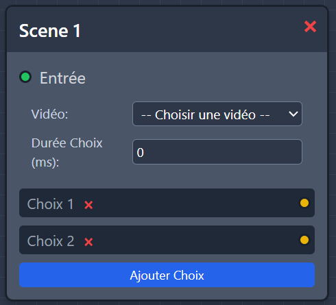
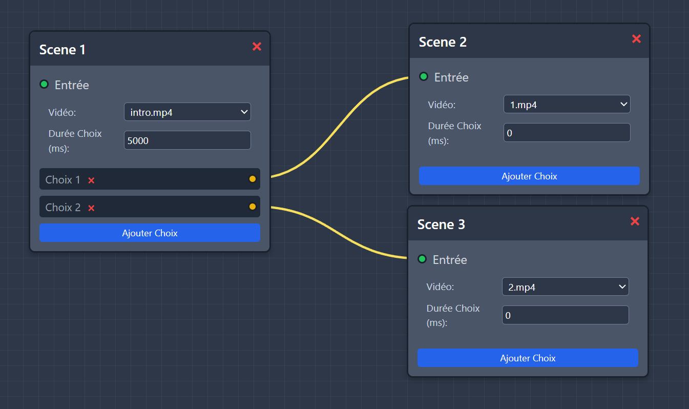

StorySwitch est une plateforme pour créer et regarder des films interactifs, où le spectateur influence l'histoire en faisant des choix.
Vous pouvez importer vos vidéos, les organiser en séquences liées entre elles, et proposer différents chemins selon les choix du spectateur.
Dans le Lecteur, il suffit de suivre le film et de sélectionner les options proposées pour avancer dans l'histoire.
Pour commencer un projet, cliquez sur "Charger le dossier Vidéos" et sélectionnez le dossier contenant vos vidéos.
Conseil : Nommez vos fichiers clairement pour vous y retrouver (ex : intro.mp4, choixA.mp4).
Ajouter un nœud en cliquant sur le bouton: chaque nœud contient : une entrée (rond vert), une vidéo, la durée du choix et en dessous, les boutons de choix. Vous pouvez créer plusieurs choix, un seul ou aucun.
Exemple d'un noeud :
Relier les choix : chaque choix possède un petit rond jaune. Pour connecter ce choix à la vidéo suivante, cliquez sur ce rond et faites-le glisser jusqu'au nœud correspondant (rond vert) de la vidéo suivante.
Exemple de noeuds reliés :
Répétez le processus pour chaque séquence afin de construire votre film interactif étape par étape.
Chaque nœud de choix possède une durée exprimée en millisecondes (1000ms=1s) : c'est le temps laissé au spectateur pour sélectionner une option lors du visionnage.
Une fois votre film interactif terminé, exportez-le au format .json pour pouvoir le
visionner dans le Lecteur en appuyant sur le bouton prévu à cet effet "Exporter JSON".
Pour visionner un film interactif, importez un fichier .json ou chargez celui que
vous venez d'exporter depuis l'Éditeur.
Cliquez sur "Lancer le lecteur" puis "Commencer l'aventure".
Pendant le visionnage, vous pouvez :
- Mettre en pause : bouton en haut à droite ou en appuyant sur la touche Espace
- Plein écran : en appuyant sur le bouton dédié
- Lecture normale : reprise automatique après une pause
À la fin de chaque séquence :
- Les choix apparaissent en bas de l'écran.
- Un timer se lance automatiquement et une animation autour de la vidéo indique le temps restant pour choisir.
Attention : Le timer ne peut pas être mis en pause un fois lancé, même si la vidéo est mise en pause.
Si aucun choix n'est fait à temps, un choix est sélectionné aléatoirement.
Pour faire un choix, cliquez sur un bouton avant la fin du timer.
Si la séquence n'a pas de choix alors c'est la fin !